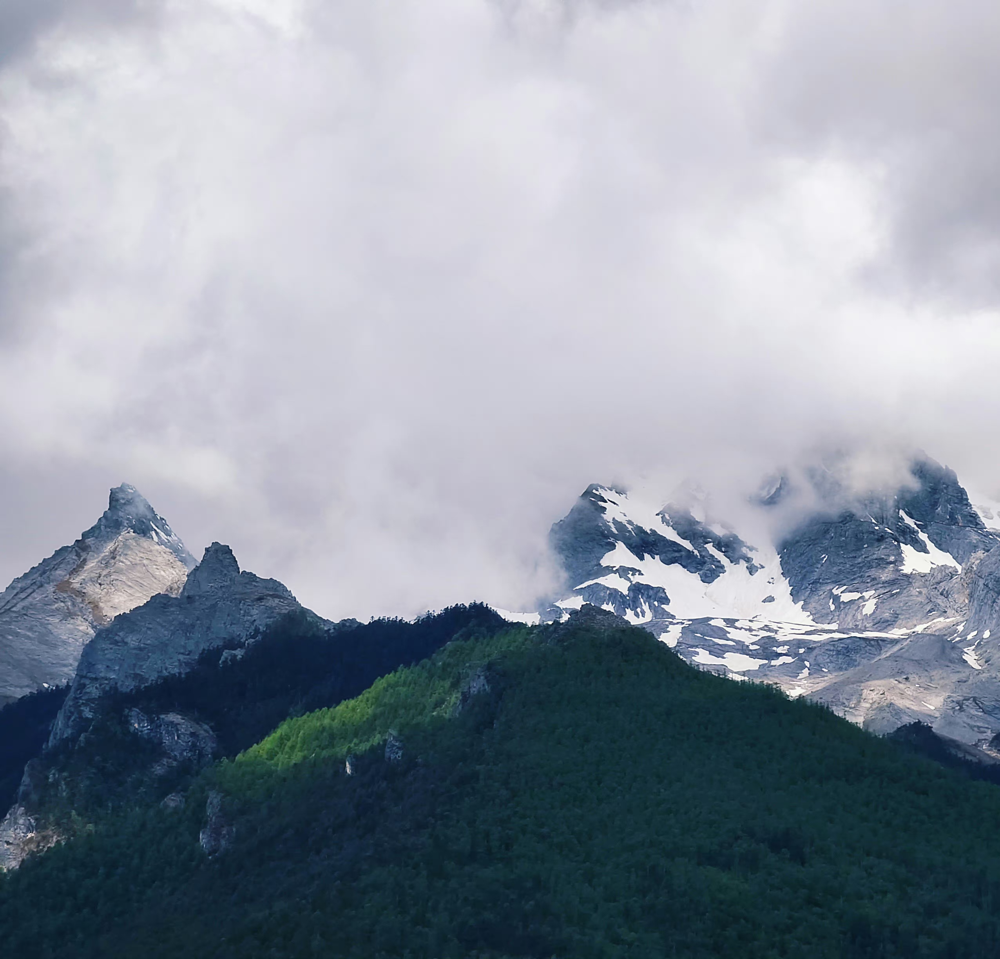

说走就走的旅行
是“日出江花红胜火，春来江水绿如蓝。能不忆江南？”
抑或是四季如春的“九乡景，酒冽香，唤醒千古清肠”彩云之南
苏州，简称“苏”，古称姑苏、平江，是江苏省地级市，国务院批复确定的中国长江三角洲重要的中心城市之一、国家高新技术产业基地和风景旅游城市。截至2018年，全市下辖5个区、代管4个县级市，总面积8657.32平方千米，常住人口1072.17万人，城镇人口815.39万人，城镇化率76.05%，常住外来人口达538万人。
苏州地处中国华东地区、江苏东南部、长三角中部，是扬子江城市群重要组成部分，东临上海、南接嘉兴、西抱太湖、北依长江，地处东经119°55′～121°20′，北纬30°47′～32°02′之间。全市地势低平，平原占总面积的54.8%，海拔4米左右，丘陵占总面积的2.7%。苏州属亚热带季风海洋性气候，四季分明，雨量充沛，种植水稻、小麦、油菜，出产棉花、蚕桑、林果，特产有碧螺春茶叶、长江刀鱼、太湖银鱼、阳澄湖大闸蟹等。
对江南的向往是从小就有的，当我在课本上学习到《苏州园林》这一课时，我并没有被文章富有逻辑性的文段所吸引，而是深深沉迷于文章所述的景。
自古以来，江南都是一个多情的地方。这里有“落花时节又逢君”的重逢，有期望留于江南“未老莫还乡，还乡须断肠”......

丽江市位于云贵高原与青藏高原的连接部位，地势西北高而东南低，最高点为玉龙雪山主峰，属低纬暖温带高原山地季风气候，境内水利资源丰富，动植物种类繁多，为云南省重点林区、中国水电西电东送基地之一。丽江市是一个多民族聚居的地方，除汉族外，共有12个世居少数民族，22种少数民族。
丽江市是全国唯一同时拥有三项世界遗产的地级市，旅游资源丰富，有旅游风景点104处，有丽江古城、玉龙雪山、虎跳峡、老君山、束河古镇等知名旅游景点。先后被评为中国旅游竞争力百强城市、中国十大休闲城市、中国优秀旅游城市、中国十大魅力城市等荣誉称号，先后成功创建为国家园林城市、国家卫生城市、国家节水型城市。2021年，丽江市实现地区生产总值570.5亿元。
我对丽江的了解始于一部电视剧《木府风云》，这部剧的剧情仅仅只有俗套的恋爱，在当时危机四伏的木府内斗之中，木府土司仍然坚持对文化的传播，正是由于执政者对丽江人民的一视同仁，才有了如今这个美丽富饶的丽江。